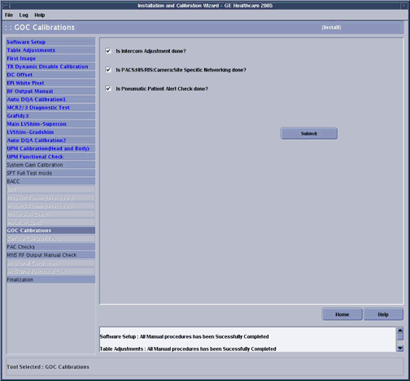

GE Exclusive Use Only
Direction 5440000, Rev# 5
Signa HDxt Service Methods
Module Version 1.0, Version Date 4/26/07
GE Exclusive Use Only |
| Required Persons | Preliminary Reqs | Procedure | Finalization |
|---|---|---|---|
| 1 | Not Applicable | 3 hours | Not Applicable |
GOC calibrations there are three tasks that must be completed and checked off:
Intercom Adjustments
PACS/HIS-RIS and networking
Pneumatic Patient Alert Check
| Item | Qty | Effectivity | Part# | Manufacturer | |
|---|---|---|---|---|---|
| Non-magnetic tool kit | 1 | - | - | - | |
Insert the Service Key.
Launch the Service Browser (Common Service Desktop).
Click the Calibration tab.
| NOTE: | a. If you are in Install or Upgrade mode, click[Install and Calibration Wizard] and then [Click here to start this tool]. |
If it is required to be completed, the GOC Calibrations checklist will be one of the final items listed in the ICW, see Illustration 1.
Illustration 1: ICW GOC Calibrations

Perform Intercom Adjustments for GOC-AA . When this is complete, check the box next to Is Intercom Adjustment done?
Perform RIS set up . When this is complete, check the box next to Is PAC/HIS/RIS Camera Site Specific Networking done?
Perform Pneumatic Patient Alert Check. This is done by compressing the Patient warning “Squeeze bulb” that is located by the magnet enclosure, and is connected to the PAC assembly. The Audio Alert which is a small box that is located near the console should produce an audible alarm. When this is complete, check the box next to Is Pneumatic Patient Alert Check done?
To calibrate your monitor, follow the LCD Monitor Screen Adjustments procedure.
Click [Submit]. This will complete the GOC Calibrations section of the ICW.
Return to the Install Cal Wizard for information regarding how to advance to the next calibration and for links to other calibration procedures.